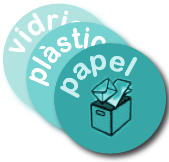
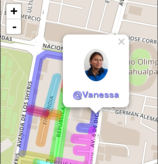
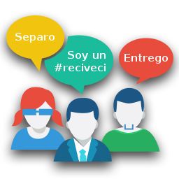

¿Qué es ReciVeci?
ReciVeci es una iniciativa ciudadana enfocada a incrementar y potenciar la labor de los recicladores de base mediante la creación de un vínculo humano entre el reciclador(a) y el ciudadano(a).
Continúa para conocer más de lo que esta App te ofrece.

Conoce sobre los diferentes tipos de materiales que son reciclables y que puedes separar.
Dentro de cada tipo encontrarás mayor detalle sobre cómo identificarlos, prepararlos y finalmente almacenarlos.

En esta sección conocerás cómo entregar el material que previamente has separado.
También podrás identificar y conocer un poco más al reciclador(a) que pasa por tu barrio.

Te invitamos a que compartas las alegría de ser parte de esta inicitiva que nace y crece de todos los ciudadanos.
Aquí podrás encontrar los enlaces a las redes sociales y a los otros canales de comunicación digitales. Tus comentarios y sugerencias son bien recividos.